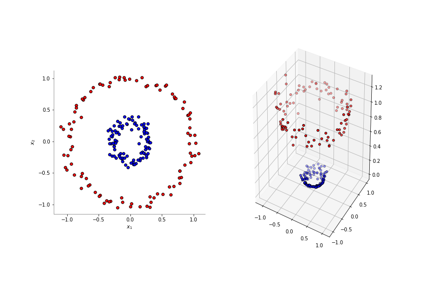
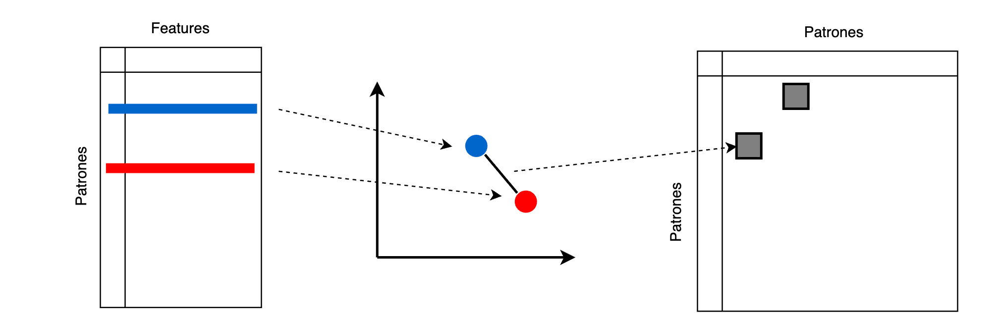

Transformaciones con Kernels y kernel trick — 10:00 min
10:00 min | Última modificación: Septiembre 24, 2021 | YouTube
Estas metodologías permiten transformar el espacio de entrada (las características) a un espacio no lineal, con el fin de hacer el problema tratable por las metodologías disponibles.
En el siguiente ejemplo, las dos clases no son linealmente separables. Mediante la transformación a un espacio dimensional mayor:
las clases se hacen linealmente separables. Note que explicitamente se están computando nuevas columnas en el dataset cuando se agrega la nueva columna \(x_1^2 + x_2^2\).

Desde el punto de vista conceptual, existe un número infinito de transformaciones que podrían aumentar la dimensionalidad de los datos, pero muchas de ellas son imprácticas y costosas computacionalmente.
En los métodos de kernel, se soluciona este problema al representar los datos con una matriz \(K\) de \(n \times n\) (donde \(n\) es la cantidad de ejemplos del dataset), donde el elemento \(k_{ij}\) corresponde a una comparación de la similitud entre los ejemplos (o patrones) \(x_i\) y \(x_j\). Esto se conoce con el nombre de kernel trick.

Una función kernel es una función cuyas entradas son los patrones del dataset y retorna su producto punto.
Si \(\mathbf{x}\) y \(\mathbf{z}\) son dos filas del dataset (patrones) y \(\phi()\) es una función, entonces una función kernel se define como:
Como ejemplo, considere el siguiente kernel lineal:
para:
[1]:
x = [
[1, 2],
[3, 4],
[5, 6],
]
entonces será igual a:
y asi sucesivamente.
Kernel Lineal
[2]:
from sklearn.metrics.pairwise import linear_kernel
linear_kernel(X=x, Y=x)
[2]:
array([[ 5., 11., 17.],
[11., 25., 39.],
[17., 39., 61.]])
[3]:
linear_kernel(X=x)
[3]:
array([[ 5., 11., 17.],
[11., 25., 39.],
[17., 39., 61.]])
Kernel polinomial
[4]:
from sklearn.metrics.pairwise import polynomial_kernel
polynomial_kernel(
X=x,
Y=x,
degree=2,
gamma=1,
coef0=0,
)
[4]:
array([[ 25., 121., 289.],
[ 121., 625., 1521.],
[ 289., 1521., 3721.]])
Kernel sigmoidal
[5]:
from sklearn.metrics.pairwise import sigmoid_kernel
sigmoid_kernel(
X=x,
Y=x,
gamma=1,
coef0=0,
)
[5]:
array([[0.9999092, 1. , 1. ],
[1. , 1. , 1. ],
[1. , 1. , 1. ]])
Kernel RBF
[6]:
from sklearn.metrics.pairwise import rbf_kernel
rbf_kernel(
X=x,
Y=x,
gamma=1,
)
[6]:
array([[1.00000000e+00, 3.35462628e-04, 1.26641655e-14],
[3.35462628e-04, 1.00000000e+00, 3.35462628e-04],
[1.26641655e-14, 3.35462628e-04, 1.00000000e+00]])
Kernel Laplaciano
donde $ ||x - y||_1$ representa la distancia de Manhattan entre los dos puntos.
[7]:
from sklearn.metrics.pairwise import laplacian_kernel
laplacian_kernel(
X=x,
Y=x,
gamma=1,
)
[7]:
array([[1.00000000e+00, 1.83156389e-02, 3.35462628e-04],
[1.83156389e-02, 1.00000000e+00, 1.83156389e-02],
[3.35462628e-04, 1.83156389e-02, 1.00000000e+00]])
Kernel Chi-cuadrado
[8]:
from sklearn.metrics.pairwise import chi2_kernel
chi2_kernel(
X=x,
Y=x,
gamma=1,
)
[8]:
array([[1. , 0.1888756 , 0.00940356],
[0.1888756 , 1. , 0.40656966],
[0.00940356, 0.40656966, 1. ]])
[9]:
def fig1():
import matplotlib.pyplot as plt
import numpy as np
from sklearn.datasets import make_circles
np.random.seed(0)
X, y = make_circles(n_samples=200, factor=0.3, noise=0.05)
plt.figure(figsize=(12, 8))
plt.subplot(1, 2, 1, aspect="equal")
reds = y == 0
blues = y == 1
plt.scatter(X[reds, 0], X[reds, 1], c="red", s=30, edgecolor="k")
plt.scatter(X[blues, 0], X[blues, 1], c="blue", s=30, edgecolor="k")
plt.xlabel("$x_1$")
plt.ylabel("$x_2$")
X_transf = np.c_[X, X[:, 0] ** 2 + X[:, 1] ** 2]
plt.gca().spines["left"].set_color("gray")
plt.gca().spines["bottom"].set_color("gray")
plt.gca().spines["top"].set_visible(False)
plt.gca().spines["right"].set_visible(False)
ax = plt.subplot(1, 2, 2, projection="3d")
ax.scatter(
X_transf[reds, 0],
X_transf[reds, 1],
X_transf[reds, 2],
marker="o",
c="red",
edgecolor="k",
)
ax.scatter(
X_transf[blues, 0],
X_transf[blues, 1],
X_transf[blues, 2],
marker="o",
c="blue",
edgecolor="k",
)
# plt.savefig("assets/kernel_transf.png")
plt.close()
fig1()